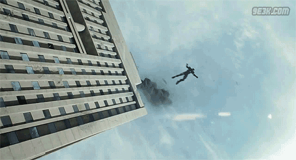

Anthony "Tony" Edward Stark was born on Friday, May 29, 1970 to Howard and Maria Stark. Tony's early life was often dominated by the absence of his father who he would later describe as 'cold' and 'calculating'. Growing up, Tony's father would constantly talk about his friend Captain America, so that he could inspire Tony to do great things in life, which highly annoyed young Tony Stark. Howard hired a butler named Edwin Jarvis before Tony was born. Jarvis watched over Tony thoughout all of his childhood. When he was four years old, he made his first Circuit Board. When he was almost seven he built an engine. When Tony was seventeen he graduated MIT at the top of his class.
One thing about Tony's childhood that annoyed him was his nanny that cared for him until he was 14.
During his business trip to Afghanistan to demonstrate Stark Industries' newest weapon, the Jericho missile, Tony's convoy was attacked by insurgents.The blast caused him to lose consciousness and embedded several pieces of shrapnel in his chest, several fragments dangerously close to his heart. He woke up some time later with an electromagnet attached to his chest. Hooked up to a car battery, the electromagnet kept the shrapnel from entering his heart and killing him. Tony had been captured by the terrorist group, the Ten Rings, who offered his release if he built a Jericho missile for them. Knowing they would never keep up their end, Tony and fellow captive Ho Yinsen instead made a plan to escape. In order to improve Tony's condition, he and Yinsen created a miniature Arc Reactor, a smaller version of the power source previously invented by Tony's father, Howard Stark, and Anton Vanko, which they embedded into his chest to supply energy to the electromagnet protecting his heart. Together, they secretly began building an armored suit that helped them escape and lead to the birth of Iron Man.
One night, Tony arrived home and was greeted by a visitor standing by the window. He revealed himself as Nick Fury, director of S.H.I.E.L.D., and warned him that he was not the only 'super hero' in the world, intending to discuss with Stark about the Avengers Initiative. However Stark had no interest in the Initiative. At a debriefing, while showing news footage of another superhuman event, Nick Fury informed Tony that while Iron Man was a suitable candidate for the "Avengers Initiative", Tony himself was not. S.H.I.E.L.D. wanted Tony in a consultant position.

After Loki infiltrated the Joint Dark Energy Mission Facility and stole the Tesseract, Nick Fury decided it was time to re-establish the Avengers Initiative. Agent Phil Coulson traveled to the newly built Stark Tower where Tony and Pepper Potts were celebrating the successful creation of a new, clean energy source. Tony was informed of Coulson's presence at Stark Tower by J.A.R.V.I.S. to which he informed him that he had "reached the Life Model Decoy of Tony Stark" and refused to see him. Coulson entered the building anyway and informed Tony that the Initiative was now active, and they needed him to come in, handing Stark holographic screens with information about Captain America, Thor, Bruce Banner and Loki.
Tony was however confronted by Loki who opened a portal into space where his army of Chitauri flew into New York City and began their war against Earth. Tony fought off the Chitauri and tried to call War Machine, who told Tony that he was too busy fighting soldiers working for the Ten Rings, but would come to help as soon as possible. Iron Man was joined by his teammates as they begin to battle the alien menace. After a long battle, the team were still outnumbered and learned that Natasha had found a way to close the portal. Stark hindered this as Fury has instructed him that the World Security Council had sent a missile in to blow up Manhattan. Stark intercepted the missile and flew it up through the portal and blew up the Chitauri Command Center, losing power in the process and falling unconscious back through the portal just before it closed. As Stark fell back to earth, he was caught by the Hulk who landed with him back on the ground.
